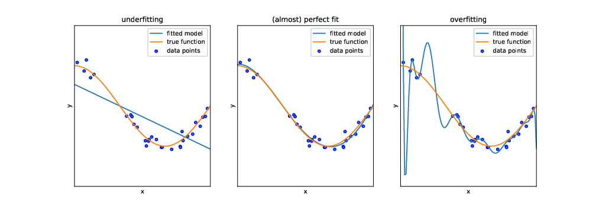
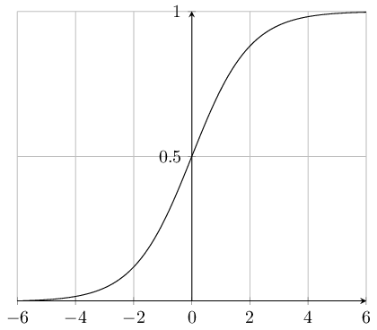
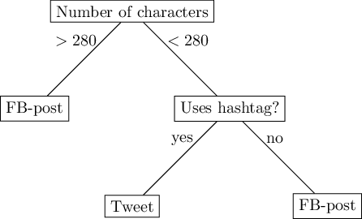
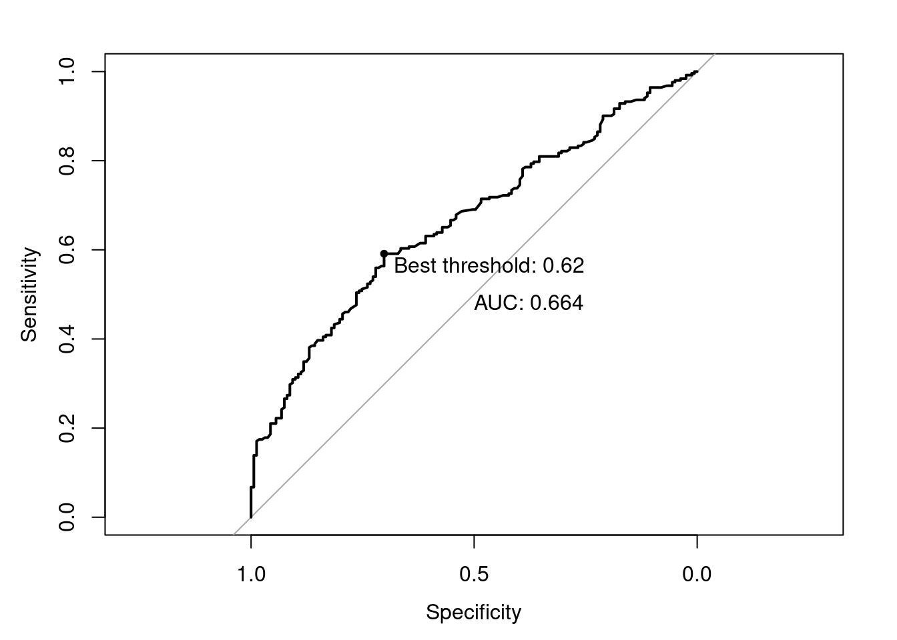

8 Statistical Modeling and Supervised Machine Learning
At the time of writing this chapter, caret was the state of the art Machine Learning package for R. We now think that the (newer) tidymodels package is a better choice in many regards. For this reason, we are planning to rewrite this chapter using that package. See the draft updated version of this chapter and/or the relevant github issue for more information.
Abstract. This chapter introduces the reader to the world of supervised machine learning. It starts by outlining how classical statistical techniques such as regression models can be used for prediction. It then provides an overview of frequently-used techniques from Naïve Bayes classifiers to neural networks.
Keywords. supervised machine learning
Objectives: - Understand the principles of supervised machine learning - Be able to run a predictive model - Be able to evaluate the performance of a predictive model
In this chapter, we introduce the basic concepts and ideas behind machine learning. We will outline how machine learning relates to traditional statistical approaches that you already might know (and as you will see, there is a lot of overlap), present different types of models, and discuss how to validate them. Later in this book (Section 11.4), we will specifically apply the knowledge you gain from this chapter to the analysis of textual data, arguably one of the most interesting tasks in the computational analysis of communication.
In this chapter, we focus on supervised machine learning (SML) – a form of machine learning, where we aim to predict a variable that, for at least a part of our data, is known. SML is usually applied to classification and regression problems. To illustrate the idea, imagine that you are interested in predicting gender, based on Twitter biographies. You determine the gender for some of the biographies yourself and hand these examples over to the computer. The computer “learns” this classification from your examples, and can then be used to predict the gender for other Twitter biographies for which you do not know the gender.
In unsupervised machine learning (UML), in contrast, you do not have such examples. Therefore, UML is usually applied to clustering and associations problems. We have discussed some of these techniques in Section 7.3, in particular cluster analysis and principal component analysis (PCA). Later, in Section 11.5, we will discuss topic modeling, an unsupervised method to extract so-called topics from textual data.
Even though both approaches can be combined (for instance, one could first reduce the amount of data using PCA or SVD, and then predict some outcome), they can be seen as fundamentally different, from both theoretical and conceptual points of view. Unsupervised machine learning is a bottom-up approach and corresponds to an inductive reasoning: you do not have a hypothesis of, for instance, which topics are present in a corpus of text; you rather let the topics emerge from the data. Supervised machine learning, in contrast, is a top-down approach and can be seen as more deductive: you define a priori which topics to predict.
8.1 Statistical Modeling and Prediction
Machine learning, many people joke, is nothing other than a fancy name for statistics. And, in fact, there is some truth to this: if you say “logistic regression”, this will sound familiar to both statisticians and machine learning practitioners. Hence, it does not make much sense to distinguish between statistics on the one hand and machine learning on the other hand. Still, there are some differences between traditional statistical approaches that you may have learned about in your statistics classes and the machine learning approach, even if some of the same mathematical tools are used. One may say that the focus is a different one, and the objective we want to achieve may differ.
Let us illustrate this with an example. media.csv1 contains a few columns from survey data on how many days per week respondents turn to different media types (radio, newspaper, tv and Internet) in order to follow the news2. It also contains their age (in years), their gender (coded as female = 0, male = 1), and their education (on a 5-point scale).
A straightforward question to ask is how far the sociodemographic characteristics of the respondents explain their media use. Social scientists would typically approach this question by running a regression analysis. Such an analysis tells us how some independent variables \(x_1, x_2, \ldots, x_n\) can explain \(y\). In an ordinary least square regression (OLS), we would estimate \(y=\beta_0 + \beta_1 x_1 + \beta_2 x_2 + \ldots + \beta_n x_n\).
In a typical social-science paper, we would then interpret the coefficients that we estimated, and say something like: when \(x_1\) increases by one unit, \(y\) increases by \(\beta_1\). We sometimes call this “the effect of \(x_1\) on \(y\)” (even though, of course, it depends on the study design whether the relationship can really be interpreted as a causal effect). Additionally, we might look at the explained variance \(R^2\), to assess how well the model fits our data. In Example 8.1 we use this regression approach to model the relationship of age and gender over the number of days per week a person reads a newspaper. We fit the linear model using the stats function lm in R and the statsmodels function ols (imported from the module statsmodels.formula.api) in Python.
Most traditional social-scientific analyses stop after reporting and interpreting the coefficients of age (\(\beta = 0.0676\)) and gender (\(\beta = -0.0896\)), as well as their standard errors, confidence intervals, p-values, and the total explained variance (19%). But we can go a step further. Given that we have already estimated our regression equation, why not use it to do some prediction?
We have just estimated that
\[newspaperreading = -0.0896 + 0.0676 \cdot age + 0.1767 \cdot gender\]
By just filling in the values for a 20 year old man, or a 40 year old woman, we can easily calculate the expected number of days such a person reads the newspaper per week, even if no such person exists in the original dataset.
We learn that:
\[\hat{y}_{man20} = -0.0896 + 0.0676 \cdot 20 + 1 \cdot 0.1767 = 1.4391\]
\[\hat{y}_{woman40} = -0.0896 + 0.0676 \cdot 40 + 0 \cdot 0.1767 = 2.6144\]
This was easy to do by hand, but of course, we could do this automatically for a large and essentially unlimited number of cases. This could be as simple as shown in Example 8.2.
In doing so, we shift our attention from the interpretation of coefficients to the prediction of the dependent variable for new, unknown cases. We do not care about the actual values of the coefficients, we just need them for our prediction. In fact, in many machine learning models, we will have so many of them that we do not even bother to report them.
As you see, this implies that we proceed in two steps: first, we use some data to estimate our model. Second, we use that model to make predictions.
We used an OLS regression for our first example, because it is very straightforward to interpret and most of our readers will be familiar with it. However, a model can take the form of any function, as long as it takes some characteristics (or “features”) of the cases (in this case, people) as input and returns a prediction.
Using such a simple OLS regression approach for prediction, as we did in our example, can come with a couple of problems, though. One problem is that in some cases, such predictions do not make much sense. For instance, even though we know that the output should be something between 0 and 7 (as that is the number of days in a week), our model will happily predict that once a man reaches the age of 105 (rare, but not impossible), he will read a newspaper on 7.185 out of 7 days. Similarly, a one year old girl will even have a negative amount of newspaper reading. A second problem relates to the models’ inherent assumptions. For instance, in our example it is quite an assumption to make that the relationships between these variables are linear –- we will therefore discuss multiple models that do not make such assumptions later in this chapter. And, finally, in many cases, we are actually not interested in getting an accurate prediction of a continuous number (a regression task), but rather in predicting a category. We may want to predict whether a tweet goes viral or not, whether a user comment is likely to contain offensive language or not, whether an article is more likely to be about politics, sports, economy, or lifestyle. In machine learning terms, these tasks are known as classification.
In the next section, we will outline key terms and concepts in machine learning. After that, we will discuss specific models that you can use for different use applications.
8.2 Concepts and Principles
The goal of Supervised Machine Learning can be summarized in one sentence: estimate a model based on some data, and then use the model to predict the expected outcome for some new cases, for which we do not know the outcome yet. This is exactly what we have done in the introductory example in Section 8.1.
But when do we need it?
In short, in any scenario where the following two preconditions are fulfilled. First, we have a large dataset (say, \(100000\) headlines) for which we want to predict to which class they belong to (say, whether they are clickbait or not). Second, for a random subset of the data (say, \(2000\) of the headlines), we already know the class. For example because we have manually coded (“annotated”) them.
Before we start using SML, though, we first need to have a common terminology. At the risk of oversimplifying matters, Table 8.1 provides a rough guideline of how some typical machine learning terms translate to statistical terms that you may be familiar with.
| machine learning lingo | statistics lingo |
|---|---|
| feature | independent variable |
| label | dependent variable |
| labeled dataset | dataset with both independent and dependent variables |
| to train a model | to estimate |
| classifier (classification) | model to predict nominal outcomes |
| to annotate | to (manually) code (content analysis) |
Let us explain them more in detail by walking through a typical SML workflow.
Before we start, we need to get a labeled dataset. It may be given to us, or we may need to create it ourselves. For instance, often we can draw a random sample of our data and use techniques of manual content analysis (e.g., Riffe et al. 2019) to annotate (i.e., to manually code) the data. You can download an example for this process (annotating the topic of news articles) from dx.doi.org/10.6084/m9.figshare.7314896.v1 (Vermeer 2018).
It is hard to give a rule of thumb for how much labeled data you need. It depends heavily on the type of data you have (for instance, if it is a binary as opposed to a multi-class classification problem), and on how evenly distributed (class balance) they are (after all, having \(10000\) annotated headlines doesn’t help you if \(9990\) are not clickbait and only \(10\) are). These reservations notwithstanding, it is fair to say that typical sizes in our field are (very roughly) speaking often in the order of \(1000\) to \(10000\) when classifying longer texts (see Burscher et al. 2014), even though researchers studying less rich data sometimes annotate larger datasets (e.g., \(60000\) social media messages in Vermeer et al. 2019).
Once we have established that this labeled dataset is available and have ensured that it is of good quality, we randomly split it into two datasets: a training dataset and a test dataset.3 We will use the first one to train our model, and the second to test how well our model performs. Common ratios range from 50:50 to 80:20; and especially if the size of your labeled dataset is rather limited, you may want to have a slightly larger training dataset at the expense of a slightly smaller test dataset.
In Example 8.3, we prepare the dataset we already used in Section 8.1 for classification by creating a dichotomous variable (the label) and splitting it into a training and a test dataset. We use y_train to denote the training labels and X_train to denote the feature matrix of the training dataset; y_test and X_test is the corresponding test dataset. We set a so-called random-state seed to make sure that the random splitting will be the same when re-running the code. We can easily split these datasets using the rsample function initial_split in R and the sklearn function train_test_split in Python.
We now can train our classifier (i.e., estimate our model using the training dataset contained in the objects X_train and y_train). This can be as straightforward as estimating a logistic regression equation (we will discuss different classifiers in Section 8.3). It may be that we first need to create new independent variables, so-called features, a step known as feature engineering, for example by transforming existing variables, combining them, or by converting text to numerical word frequencies. Example 8.4 shows how easy it is to train a classifier using the Naïve Bayes algorithm with packages caret/naivebayes in R and sklearn in Python (this approach will be better explained in Section 8.3.1).
But before we can actually use this classifier to do some useful work, we need to test how capable it is to predict the correct labels, given a set of features. One might think that we could just feed it the same input data (i.e., the same features) again and see whether the predicted labels match the actual labels of the test dataset. In fact, we could do that. But this test would not be strict enough: after all, the classifier has been trained on exactly these data, and therefore one would expect it to perform pretty well. In particular, it may be that the classifier is very good in predicting its own training data, but fails at predicting other data, because it overgeneralizes some idiosyncrasy in the data, a phenomenon known as overfitting (see Figure 8.1).

Instead, we use the features of the test dataset (stored in the objects X_test and y_test) as input for our classifier, and evaluate how far the predicted labels match the actual labels. Remember: the classifier has at no point in time seen the actual labels. Therefore, we can in fact calculate how often the prediction is right.4
As shown in Example 8.5, we can create a confusion matrix (generated with caret function confusionMatrix in R and sklearn function confusion_matrix in Python), and then estimate two measures: precision and recall (using base R calculations in R and sklearn function classification_report in Python). In a binary classification, the confusion matrix is a useful table in which each column usually represents the number of cases in a predicted class, and each row the number of cases in the real or actual class. With this matrix (see Figure 8.2) we can then estimate the number of true positives (TP) (correct prediction), false positives (FP) (incorrect prediction), true negatives (TN) (correct prediction) and false negatives (FN) (incorrect prediction).

For a better understanding of these concepts, imagine that we build a sentiment classifier, that predicts – based on the text of a movie review – whether it is a positive review or a negative review. Let us assume that the goal of training this classifier is to build an app that recommends only good movies to the user. There are two things that we want to achieve: we want to find as many positive films as possible (recall), but we also want that the selection we found only contains positive films (precision).
Precision is calculated as \(\frac{\rm{TP}}{\rm{TP}+\rm{FP}}\), where TP are true positives and FP are false positives. For example, if our classifier retrieves 200 articles that it classifies as positive films, but only 150 of them indeed are positive films, then the precision is \(\frac{150}{150+50} = \frac{150}{200} = 0.75\).
Recall is calculated as \(\frac{\rm{TP}}{\rm{TP}+\rm{FN}}\), where TP are true positives and FN are false negatives. If we know that the classifier from the previous paragraph missed 20 positive films, then the recall is \(\frac{150}{150+20} = \frac{150}{170}= 0.88\).
In other words: recall measures how many of the cases we wanted to find we actually found. Precision measures how much of what we have found is actually correct.
Often, we have to make a trade-off between precision and recall. For example, just retrieving every film would give us a recall of 1.0 (after all, we didn’t miss a single positive film). But on the other hand, we retrieved all the negative films as well, so precision will be extremely low. It can depend on the task at hand whether precision or recall is more important. In Section 8.5, we discuss this trade-off in detail, as well as other metrics such as accuracy, \(F_1\)-score or the area under the curve (AUC).
8.3 Classical Machine Learning: From Naïve Bayes to Neural Networks
To do supervised machine learning, we can use several models, all of which have different advantages and disadvantages, and are more useful for some use cases than for others. We limit ourselves to the most common ones in this chapter. The website of scikit-learn (www.scikit-learn.org) gives a good overview of more alternatives.
8.3.1 Naïve Bayes
The Naïve Bayes classifier is a very simple classifier that is often used as a “baseline”. Before estimating more complicated and resource-intensive models, it is a good idea to estimate a simpler model first, to assess how much better the other model actually is. Sometimes, the simple model might even be just fine.
The Naïve Bayes classifier allows you to predict a binary outcome, such as: “Is this message spam or not?”, “Is this article about politics or not?”, “Will this go viral or not?”. It, in fact, also allows you to do the same with more than one category, and both the Python and the R implementation will happily let you train a Naïve Bayes classifier on nominal data, such as whether an article is about politics, sports, the economy, or something different.
For the sake of simplicity, we will discuss a binary example, though.
As its name suggests, a Naïve Bayes classifier is based on Bayes’ theorem, and it is “naïve”. It may sound a bit weird to call a model “naïve”, but what it actually means is not so much that it is stupid, but that it makes very far-reaching assumptions about the data (hence, it is naïve). Specifically, it assumes that all features are independent from each other. Of course, that is hardly ever the case – for instance, in a survey data set, while age and gender indeed are generally independent from each other, this is not the case for education, political interest, media use, and so on. And in textual data, whether a word \(W_1\) is used is not independent from the use of word \(W_2\) – after all, both are not randomly drawn from a dictionary, but depend on the topic of the text (and other things). Astonishingly, even though these assumptions are regularly violated, the Naïve Bayes classifier works reasonably well in practice.
The Bayes part of the Naïve Bayes classifier comes from the fact that it uses Bayes’ formula:
\[P(A|B) = \frac{P(B|A) \cdot P(A)}{P(B)}\]
As a short refresher: The \(P(A|B)\) can be read as: the probability of A, given B. Or: the probability of A if B is the case/present/true. Applied to our problem, this means that we are interested in estimating the probability of an item having a label, given a set of features:
\[P(label|features) = \frac{P(features|label) \cdot P(label)}{P(features)}\]
\(P(label)\) can be easily calculated: it’s just the fraction of all cases with the label we are interested in. Because we assume that our features are independent (remember, the “naïve” part), we can calculate \(P(features)\) and \(P(features|label)\) by just multiplying the probabilities of each individual feature. Let’s assume we have three features, \(x_1, x_2, x_3\). We now simply calculate the percentage of all cases that contain these features: \(P(x_1)\), \(P(x_2)\) and \(P(x_3)\).
Then we do the same for the conditional probabilities and calculate the percentage of cases with our label that contain these features, \(P(x_1|label)\), \(P(x_2|label)\) and \(P(x_3|label)\).
If we fill this in our formula, we get:
\[P(label|features)=\frac{P(x_1|label)\cdot (x_2|label) \cdot (x_3|label)}{P(x_1)\cdot P(x_2)\cdot P(x_3)}\]
Remember that all we need to do to calculate this formula is: (1) count how many cases we have in total; (2) count how many cases have our label; (3) count how many cases in (1) have feature \(x\); (4) count how many cases in (2) have feature \(x\). As you can imagine, doing this does not take much time to do, which is what makes the Naïve Bayes classifier such a fast and efficient choice. This may in particular be true if you have a lot of features (i.e., high-dimensional data).
Counting whether a feature is present or not, of course, is only possible for binary data. We could for example simply check whether a given word is present in a text or not. But what if our features are continuous data, such as the number of times the word is present? We could dichotomize it, but that would discard information. So, what we do instead, is that we estimate P\((x_i)\) using a distribution, for example a Gaussian, Bernoulli, or multinomial distribution. The core idea, though, stays the same.
Our examples in Section 8.2 illustrate how to train a Naïve Bayes classifier. We first create the labels (whether someone uses online news at all or not), split our data into a training and a test dataset (here, we use 80% for training and 20% for testing) (Example 8.3), then fit (train) a classifier (Example 8.4), before we assess how well it predicts our training data (Example 8.5).
In Section 8.5, we discuss in more detail how to evaluate different classifiers, but let’s have a sneak preview at the most used measures of how well our classifier performs. The confusion matrix from Example 8.5 tells us how many users were indeed classified as users (55), and how many (wrongly) as non-users (106).5 That doesn’t look very good; but on the other hand, 212 of the non-users were correctly classified as such, and only 40 were not.
More formally, we can express this using precision and recall. When we are interested in finding true users, we get a precision of \(\frac{212}{212+106} = 0.67\) and a recall of \(\frac{212}{212+40} = 0.84\). However, if we want to know how good we are in identifying those who do not use online news, we do – as we saw in the confusion matrix – considerably worse: precision and recall are 0.58 and 0.34, respectively.
8.3.2 Logistic Regression
Regression analysis does not make as strong an assumption about the independence of features as the Naïve Bayes classifier does. Sure, we have been warned about the dangers of multicollinearity in statistics classes, but correlation between features (for which multicollinearity is a fancy term) affects the coefficients and their \(p\)-values, but not the predictions of the model as a whole. To put it differently, in regression models, we do not estimate the probability of a label given a feature, independent of all the other features, but are able to “control for” their influence. In theory, this should make our models better, and also in practice, this regularly is the case. However, ultimately, it is an empirical question which model performs best.
While we started this chapter with an example of an OLS regression to estimate a continuous outcome (well, by approximation, as for “days per week” not all values make sense), we will now use a regression approach to predict nominal outcomes, just as in the Naïve Bayes example. The type of regression analysis to use for this is called logistic regression.
In a normal OLS regression, we estimate \[y = \beta_o + \beta_1 x_1 + \beta_2 x_2 + \ldots + \beta_n x_n\]
But this gives us a continuous outcome, which we do not want. In a logistic regression, we therefore use the sigmoid function to map this continuous outcome to a value between 0 and 1. The sigmoid function is defined as \(sigmoid(x) = \frac{1}{1 + e^{-x}}\) and depicted in Figure 8.3.

Combining these formulas gives us:
\[P = \frac{1}{1 + e^{-(\beta_o + \beta_1 x_1 + \beta_2 x_2 = \ldots + \beta_n x_n)}} \]
Wait, you might say. Isn’t \(P\) still continuous, even though it is now bounded between 0 and 1? Yes, it is. Therefore, after having estimated the model, we use a threshold value (typically, 0.5, but we will discuss in Section 8.5.1 how to select different ones) to predict the label. If \(P>0.5\), we predict that the case is spam/about politics/will go viral, if not, we predict it’s not. A nice side effect of this is that we still can use the probabilities in case we are interested in them, for example to figure out for which cases we are more confident in our prediction.
Just as with the Naïve Bayes classifier, also for logistic regression classifiers, Python and R will happily allow us to estimate models with multiple nominal outcomes instead of a binary outcome. In Example 8.6 we fit the logistic regression using the caret method logreg in R and the sklearn (module linear_model) function LogisticRegression in Python.
And, of course, you actually can do OLS regression (or more advanced regression models) if you want to estimate a continuous outcome.
8.3.3 Support Vector Machines
Support Vector Machines (SVM) are another very popular and versatile approach to supervised machine learning. In fact, they are quite similar to logistic regression, but try to optimize a different function. In technical terms, SVM minimizes hinge loss instead of logistic loss.
What does that mean to us? When estimating logistic regressions, we are interested in estimating probabilities, while when training a SVM, we are interested in finding a plane (more specifically, a hyperplane) that best separates the data points of the two classes (e.g., spam versus non-spam messages) that we want to distinguish. This also means that a SVM does not give you probabilities associated with your prediction, but just the label. But usually, that’s all that you want anyway.
Without going into mathematical detail here (for that, a good source would be Kelleher et al., 2015), we can say that finding the widest separating margin that we can achieve constructing a plane in a graphical space (SVM) versus optimizing a log-likelihood function (logistic regression) results in a model that is less sensitive to outliers, and tends to be more balanced.
There are a lot of graphical visualizations available, for example in the notebooks supplementing VanderPlas (2016) 6. For now, it may suffice to imagine the two-dimensional case: we construct a line that separates two groups of dots with the broadest possible margin. The dots that the margin of this line just touches are called the “support vectors”, hence the name.
You could imagine that sometimes we may want to be a bit lenient about the margins. If we have thousands of data points, then maybe it is okay if one or two of these data points are, in fact, within the margin of the separating line (or hyperplane). We can control this with a parameter called \(C\): For very high values, this is not allowed, but the lower the value, the “softer” the margin is. In Section 8.5.3, we will show an approach to find the optimal value.
A big advantage of SVMs is that they can be extended to non-linearly separable classes. Using a so-called kernel function or kernel trick, we can transform our data so that the dataset becomes linearly separable. Choices include but are not limited to multinomial kernels, the radial basis function (RBF), or Gaussian kernels. If we, for example, have two concentric rings of data points (like a donut), then we cannot find a straight line separating them. However, a RBF kernel can transfer them into a linearly separable space. The aforementioned online visualizations can be very instructive here.
Example 8.7 shows how we implement standard SVM to our data using the caret method svmLinear3 in R and the sklearn (module svm) function SVC in Python. You can see in the code that feature data is standardized or normalized (with \(m = 0\) and \(\rm{std} = 1\)) before model training in order to have all the features measured at the same scale, as required by SMV.
8.3.4 Decision Trees and Random Forests
In the models we have discussed so far, we were essentially modeling linear relationships. If the value of a feature is twice as high, its influence on the outcome will be twice as high as well. Sure, we can (and do, as in the case of the sigmoid function or the SVM kernel trick) apply some transformations, but we have not really considered yet how we can model situations in which, for instance, we care about whether the value of a feature is above (or below) a specific threshold. For instance, if we have a set of social media messages and want to model the medium from which they most likely come, then its length is very important information. If it is longer than 280 characters (or, historically, 140), then we can be very sure it is not from Twitter, even though the reverse is not necessarily true. But it does not matter at all whether it is 290 or \(10000\) characters long.
Entering this variable into a logistic regression, thus, would not be a smart idea. We could, of course, dichotomize it, but that would only partly solve the problem, as its effect can still be overridden by other variables. In this example, we know how to dichotomize it based on our prior knowledge about the number of characters in a tweet, but this does not necessarily need to be the case; it might be something we need to estimate.
A step-wise decision, in which we first check one feature (the length), before checking another feature, can be modeled as a decision tree. Figure 8.4 depicts a (hypothetical) decision tree with three leaves.

Faced with the challenge to predict whether a social media message is a tweet or a Facebook post, we could predict ‘Facebook post’ if its length is greater than 280 characters. If not, we check whether it includes hashtags, and if so, we predict ‘tweet’, otherwise, ‘Facebook post’. Of course, this simplistic model will be wrong at some times, because not all tweets have hashtags, and some Facebook posts actually do include hashtags.
While we constructed this hypothetical decision tree by hand, usually, we are more interested in learning such non-linear relationships from the data. This means that we do not have to determine the cutoff point ourselves, but also that we do not determine the order in which we check multiple variables by hand.
Decision trees have two nice properties. First, they are very easy to explain. In fact, a figure like Figure 8.4 is understandable for non-experts, which can be important in scenarios where for accountability reasons, the decision of a classifier must be as transparent as possible. Second, they allow us to approximate almost all non-linear relationships (be it not necessarily very accurately).
However, this comes at large costs. Formulating a model as a series of yes/no questions, as you can imagine, inherently loses a lot of nuance. More importantly, in such a tree, you cannot “move up” again. In other words, if you make a wrong decision early on in the tree (i.e., close to its root node), you cannot correct it later. This rigidity makes decision trees also prone to overfitting: they may fit the training data very well, but may not generalize well enough to slightly different (test) data.
Because of these drawbacks, decision trees are seldom used in real-life classification tasks. Instead, one uses an ensemble model: so-called random forests. Drawing random samples from the data, we estimate multiple decision trees – hence, a forest. To arrive at a final prediction, we can then let the trees “vote” on which label we should predict. This procedure is called “majority voting”, but there are also other methods available. For example, scikit-learn in Python by default uses a method called probabilistic prediction, which takes into account probability values instead of simple votes.
In Example 8.8 we create a random forest classifier with 100 trees using the caret method rf in R and the sklearn (module ensamble) function RandomForestClassifier in Python.
Because random forests alleviate the problems of decision trees, but keep the advantage of being able to model non-linear relationships, they are frequently used when we expect such relationships (or have no idea about what the relationship looks like). Also, random forests may be a good choice if you have very different types of features (some nominal, some continuous, etc.) in your model. The same holds true if you have a lot (really a lot) of features: methods like SVM would require constructing large matrices in memory, which random forests do not. But if the relationships between your features and your labels are actually (approximately) linear, then you are probably better off with one of the other models we discussed.
8.3.5 Neural Networks
Inspired by the neurons in the brains of humans (and other animals), neural networks consist of connections between neurons that are activated if the total input is above a certain threshold.
Figure 8.5 shows the simplest type of neural network, sometimes called a perceptron. This neural network consists only of a series of input neurons (representing the features or independent variables) which are directly connected with the output neuron or neurons (representing the output class(es)). Each of the connections between neurons has a weight, which can be positive or negative. For each output neuron, the weighted sum of inputs is calculated and a function is applied to determine the result. An example output function is the sigmoid function (Figure 8.3) which transforms the output to a value between zero and one, in which case the resulting model is essentially a form of logistic regression.

If we consider a neural network for sentiment analysis of tweets, the input neurons could be the frequencies of words such as “great” or “terrible”, and we would assume that the weight of the first would be positive while the second would be negative. Such a network cannot take combinations into account, however: the result of “not great” will simply be the addition of the results of “not” and “great”.
To overcome this limitation, it is possible to add a hidden layer of latent variables between the input and output layer, such as shown in Figure 8.6. This allows for combinations of neurons, with for example both “not” and “great” loading onto a hidden neuron, which can then override the direct effect of “great”. An algorithm called backpropagation can be used to iteratively approximate the optimal values for the model. This algorithm starts from a random state and optimizes the second layer while keeping the first constant, then optimizing the first layer, and repeating until it converges.
Although such hidden layers, which can easily contain thousands of neurons, are hard to interpret substantively, they can substantially improve the performance of the model. In fact, the Universal Approximation theorem states that every decision function can be approximated to infinite precision with a single (but possibly very large) hidden layer (Goldberg 2017). Of course, since training data is always limited there is a practical limit to how deep or wide the network can be, but this shows the big difference that a hidden layer can make in the range of regularities that can be “captured” in the model.
8.4 Deep Learning
In Section 8.3.5, we introduced neural networks with hidden layers and the backpropagation algorithm to fit them, both of which date back to at least the 1970’s. In the past decade, however, the Artificial Intelligence community has been transformed by the introduction of deep learning, where deep refers to a large amount of hidden layers between the input and output layers. Many of the recent advances in AI, from self-driving cars to automatic translation and voice assistants, are made possible by the application of deep learning techniques to the enormous amounts of digital data now becoming available.
An extensive treatment of deep learning is beyond the scope of this book (we recommend Géron (2019) instead). However, in this section we will give you a brief introduction that should help you understand deep learning at a conceptual level, and in Chapter 10 and Chapter 14 we will explain how these techniques can be applied to text analysis and visual analysis, respectively.
In principle, there is no clear demarcation between a “classical” neural network with hidden layers and a “deep” neural network. There are three properties, however, that distinguish deep learning and explain why it is so successful: scale, structure, and feature learning.
Scale. First, and perhaps most importantly, deep learning models are many orders of magnitude larger and more complex than the models trained in earlier decades. This has been made possible by the confluence of unprecedented amounts of digital training data and increased computer processing power. Partly, this has been enabled by the use of graphical processing units (GPUs), hardware designed for rendering the three-dimensional worlds used in games, but that can also be used very efficiently for the computations needed to train neural networks (and mine bitcoins, but that’s another story).
Structure. Most classical neural networks have only “fully connected” hidden layers with forward propagation, meaning that each neuron in one layer is connected to each neuron in the next layer. In deep learning, many specific architectures (some of which will be discussed below) are used to process information in certain ways, limiting the number of parameters that need to be estimated.
Feature Learning. In all models described so far with the exception of neural networks with hidden layers, there was a direct relationship between the input features and the output class. This meant that it is important to make sure that the required information the model needs to distinguish the classes is directly encoded in the input features. In the example used earlier, if “not” and “good” are separate features, a single-layer network (or a Naïve Bayes model) cannot learn that these words together have a different meaning than the addition of their separate meanings. However, similar to regression analysis, where you can create an interaction term or squared term to model a non-linear relationship, the researcher can create input features for e.g. word pairs, for example including bigrams (word pairs) such as “not_good”. In fact, engineering the right features was the main way in which a researcher could improve model performance. In deep learning, however, this feature learning step is generally included in the model itself, with subsequent layers encoding different aspects of the raw data.
The properties of scale, structure, and feature learning are intertwined in deep learning: the much larger networks enable structures with beautiful names such as “recurrent networks”, “convolutional layers” or “long short-term memory”, which are used to encode specific relationships and dependencies between features. In this book, we will focus on convolutional networks as our only example of deep learning, mostly because these networks are widely used in both text and image analysis. Hopefully, this will give you insight into the general idea behind deep learning, and you can learn about this and other models in more detail in the specialized resources cited above.
8.4.1 Convolutional Neural Networks
One challenge in many machine learning problems is a mismatch between the level of measurement of the output and the input. For example, we normally want to assign a single code such as sentiment or topic to a document or image. The raw input, however, is at the word or pixel level. In classical machine learning, this is generally solved by summarizing the input at the higher level of abstraction, for example by using the total frequency of each word per document as input feature. The problem is, however, that this summarization process removes a lot information that could be useful to the machine learning model, for example combinations of words (“not good”) or their ordering (“John voted for Mary” versus “Mary voted for John”), unless the researcher engineers features such as word pairs to add this information.
Convolutional Neural Networks are one way in which deep learning can overcome this limitation. Essentially, the model internalizes the feature learning as a first part or “layer” of the model, using a specialized network to summarize the raw input values into document (or image) level features.

Figure 8.7 shows a highly simplified example of this for text analysis of a sentence fragment “Would not recommend”. The left hand side shows how each word is encoded as a binary vector (e.g. 010 for “not”, and 001 for “recommend”). In the second column, a shifting window concatenates these values for word pairs (so 010001 for “not recommend”). Next, a feature map layer detects interesting features in these concatenated values, for example a feature for a negated positive term that has positive weights for negators in the first half and for positive words in the second. These features are then pooled together to create document-level features, for example by taking the maximum value per feature, which means that a feature is present in a document if it is present in any of the word windows in the document. Finally, these document-level features are then used in a regular (dense) neural network which is connected to the output value, e.g. the document sentiment. Since the convolutional layer is now connected with the output class, the feature maps can be automatically learned using the backpropagation algorithm explained above. This means that the model can find the features in the word windows that are most helpful in predicting the document class, bringing the feature learning into the modeling process.
Of course, this is a highly simplified example, but it shows how local dependencies can be detected automatically using the convolutional network, as long as the interesting features are found within the specified word window. Other architectures, such as the Long Short Term Memory, can also be used to find non-local dependencies, but a full discussion of different architectures is well beyond the scope of this book. Chapter 10 will give a more detailed example of deep learning for text analysis, where an embedding layer is combined with a convolutional network to build a sentiment analysis model. Similarly, Chapter 14 will show how a similar technique can be used to extract features from small areas of images which are then used in automatic image classification. This involves creating a two-dimensional window over pixels rather than a unidimensional window over words, and often multiple convolutional layers are chained to detect features in increasingly large areas of the image. The underlying technique of convolutional networks, however, is the same in both cases.
8.5 Validation and Best Practices
8.5.1 Finding a Balance Between Precision and Recall
In the previous sections, we have learned how to fit different models: Naïve Bayes, logistic regressions, support vector machines, and random forests. We have also had a first look at confusion matrices, precision, and recall.
But how do we find the best model? “Best”, here, should be read as “best for our purposes” – some models may be bad, and some may be good, but which one is really the best may depend on what matters most for us: do we care more about precision or about recall? Are all classes equally important to us? And of course, other factors, such as explainability or computational costs, may factor into our decision.
But in any event, we need to decide which metrics to focus on. We can then either manually inspect them and look, for instance, which model has the highest accuracy, or the best balance of precision and recall, or a recall higher than some threshold you are willing to accept.
If we build a classifier to distinguish spam messages from legitimate messages, we could ask the following questions: - Precision.Which percentage of what our classifier predicts to be spam really is spam? - Recall.What percentage of all spam messages has our classifier found? - Accuracy.In which percentage of all cases was our classifier right?
We furthermore have: - \(F_1\)-score.The harmonic mean of precision and recall: \(F_1 = 2 \cdot \frac{\rm precision \cdot recall}{\rm precision + recall}\) - AUC.The AUC (Area under Curve) is the area under the curve that one gets when plotting the True Positive Rate (TPR) against the False Positive Rate (FPR) at various threshold settings. A perfect model will receive a value of 1.0, while random guessing between two equally probable classes will result in a value of 0.5 - Micro- and macro-average.Especially when we have more than two classes, we can calculate the average of measures such as precision, recall, or \(F_1\)-score. We can do so based on the separately calculated measures (macro), or based on the underlying values (TP, FP, etc.) (micro), which has different implications in the interpretation – especially if the classes have very different sizes.
So, which one to choose? If we really do not want to be annoyed by any spam in our inbox, we need a high recall (we want to find all spam messages). If, instead, we want to be sure that we do not accidentally throw away legitimate messages, we need a high precision (we want to be sure that all spam really is spam).
Maybe you say: well, I want both! You could look at the accuracy, a very straightforward to interpret measure. However, if you get many more legitimate messages than spam (or the other way round), this measure can be misleading: after all, even if your classifier finds almost none of the spam messages (it has a recall close to zero), you still get a very high accuracy, simply because there are so many legitimate messages. In other words, the accuracy is not a good measure when working with highly unbalanced classes. Often, it is therefore a better idea to look at the harmonic mean of precision and recall, the \(F_1\)-score, if you want to find a model that gives you a good compromise between precision and recall.
In fact, we can even fine-tune our models in such a way that they are geared towards either a better precision or a better recall. As an example, let us take a logistic regression model. It predicts a class label (such as “spam” versus “legitimate”), but it can also return the assigned probabilities. For a specific message, we can thus say that we estimate its probability of being spam as, say, 0.65. Unless we specify otherwise, everything above 0.5 will then be judged to be spam, everything below as legitimate. But we could specify a different cutoff point: we could, for instance, decide to classify everything above 0.7 as spam. This would give us a more conservative spam filter, with probably a higher precision at the expense of a lower recall.

We can visualize this with a so-called ROC (receiver operator characteristic), a plot in which we plot true positives against false positives at different thresholds (Figure 8.8). A good model extends until close to the upper left corner, and hence has a large area under the curve (AUC). If we choose a threshold at the left end of the curve, we get few false positives (good!), but also few true positives (bad!), if we go too far to the right, we get the other extreme. So, how can we find the best spot?
One approach is to print a table with three columns: the false positive rate, the true positive rate, and the threshold value. You then decide which FPR–TPR combination is most appealing to you, and use the corresponding threshold value. Alternatively, you can find the threshold value with the maximum distance between TPR and FPR, an approach also known as Yoden’s J (Example 8.9). Plotting the ROC curve can also help interpreting which TPR/FPR combination is most promising (i.e., closest to the upper left corner).
Example 8.10 The ROC curve of a (not very impressive) classifier and its area under the curve (AUC)
plt.figure(figsize=(5, 5))
plt.title("Receiver Operating Characteristic")
plt.plot(fpr, tpr, "b", label=f"AUC = {auc(fpr,tpr):0.2f}")
plt.legend(loc="lower right")
plt.plot([0, 1], [0, 1], "r--")
plt.xlim([0, 1])plt.ylim([0, 1])plt.ylabel("True Positive Rate")
plt.show()
roc_ = roc(testdata$usesinternet ~ y_pred, plot=T,
print.auc=T, print.thres="best",
print.thres.pattern="Best threshold: %1.2f")
8.5.2 Train, Validate, Test
By now, we have established which measures we can use to decide which model to use. For all of them, we have assumed that we split our labeled dataset into two: a training dataset and a test dataset. The logic behind it was simple: if we calculate precision and recall on the training data itself, our assessment would be too optimistic – after all, our models have been trained on exactly these data, so predicting the label isn’t too hard. Assessing the models on a different dataset, the test dataset, instead, gives us an assessment of what precision and recall look like if the labels haven’t been seen earlier – which is exactly what we want to know.
Unfortunately, if we calculate precision and recall (or any other metric) for multiple models on the same test dataset, and use these results to determine which metric to use, we can run into a problem: we may avoid overfitting of our model on the training data, but we now risk overfitting it on the test data! After all, we could tweak our models until they fit our test data perfectly, even if this makes the predictions for other cases worse.
One way to avoid this is to split the original data into three datasets instead of two: a training dataset, a validation dataset, and a test dataset. We train multiple model configurations on the training dataset and calculate the metrics of interest for all of them on the validation dataset. Once we have decided on a final model, we calculate its performance (once) on the test dataset, to get an unbiased estimate of its performance.
8.5.3 Cross-validation and Grid Search
In an ideal world, we would have a huge labeled dataset and would not need to worry about the decreasing size of our training dataset as we set aside our validation and test datasets.
Unfortunately, our labeled datasets in the real world have a limited size, and setting aside too many cases can be problematic. Especially if you are already on a tight budget, setting aside not only a test dataset, but also a validation dataset of meaningful size may lead to critically small training datasets. While we have addressed the problem of overfitting, this could lead to underfitting: we may have removed the only examples of some specific feature combination, for instance.
A common approach to address this issue is \(k\)-fold cross-validation. To do this, we split our training data into \(k\) partitions, known as folds. We then estimate our model \(k\) times, and each time leave one of the folds aside for validation. Hence, every fold is exactly one time the validation dataset, and exactly \(k-1\) times part of the training data. We then simply average the results of our \(k\) values for the evaluation metric we are interested in.
If our classifier generalizes well, we would expect that our metric of interest (e.g., the accuracy, or the \(F_1\)-score, …) is very similar in all folds. Example 8.11 performs a cross-validation based on the logistic regression classifier we built above. We see that the standard deviation is really low, indicating that there are almost no changes between the runs, which is great.
Running the same cross-validation on our random forest, instead, would produce not only worse (lower) means, but also worse (higher) standard deviations, even though also here, there are no dramatic changes between the runs.
Very often, cross-validation is used when we want to compare many different model specifications, for example to find optimal hyperparameters. Hyperparameters are parameters of the model that are not estimated from the data. These depend on the model, but could for example be the estimation method to use, the number of times a bootstrap should be repeated, etc. Very good examples are the hyperparameters of support vector machines (see above): it is hard to know how soft our margins should be (the \(C\)), and we may also be unsure about the right kernel (Example 8.13), or in the case of a polynomial kernel, how many degrees we want to consider.
Using the help function (e.g., RandomForestClassifier? in Python), you can look up which hyperparameters you can specify. For a random forest classifier, for instance, this includes the number of estimators in the model, the criterion, and whether or not to use bootstrapping. Example 8.12, Example 8.13, and Example 8.14 illustrate how you can automatically assess which values you should choose.
Note that in R, not all parameters are “tunable” using standard caret. Therefore, an exact replication of the grid searches in Example 8.12 and Example 8.13 would requires either manual comparisons or writing a so-called caret extension.
You can download the file from cssbook.nl/d/media.csv↩︎
For a detailed description of the dataset, see Trilling (2013).↩︎
In Section 8.5, we discuss more advanced approaches, such as splitting into training, validation, and test datasets, or cross-validation.↩︎
We assume here that the manual annotation is always right; an assumption that one may, of course, challenge. However, in the absence of any better proxy for reality, we assume that this manual annotation is the so-called gold standard that reflects the ground truth as closely as possible, and that it by definition cannot be outperformed. When creating the manual annotations, it is therefore important to safeguard their quality. In particular, one should calculate and report some reliability measures, such as the intercoder reliability which tests the degree of agreement between two or more annotators in order to check if our classes are well defined and the coders are doing their work correctly.↩︎
These are the values from the Python example, the R example slightly differs, amongst other things due to different sampling.↩︎
(jakevdp.github.io/PythonDataScienceHandbook/05.07-support-vector-machines.html)↩︎